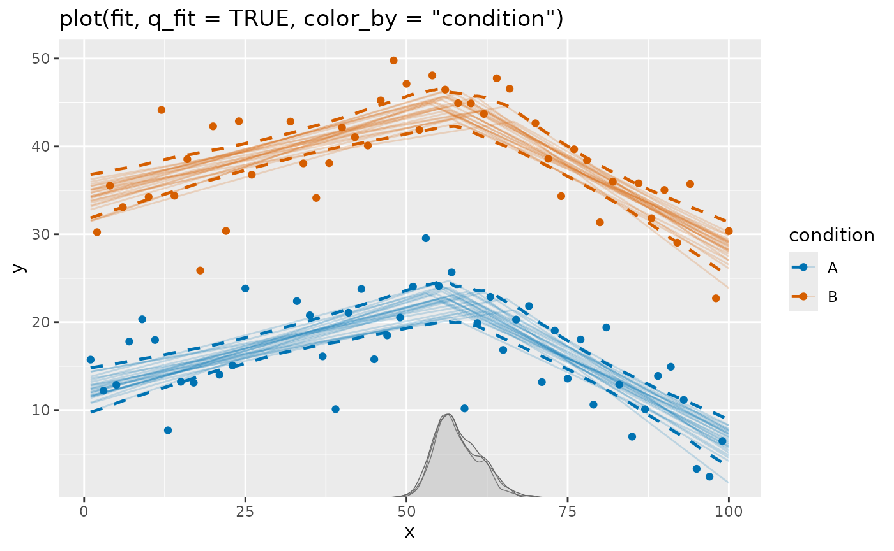
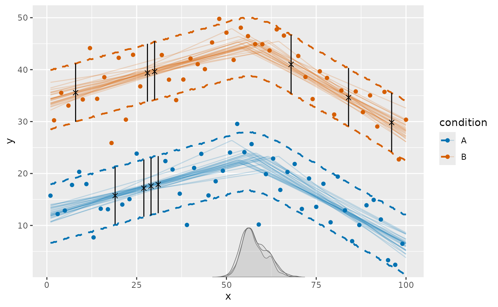
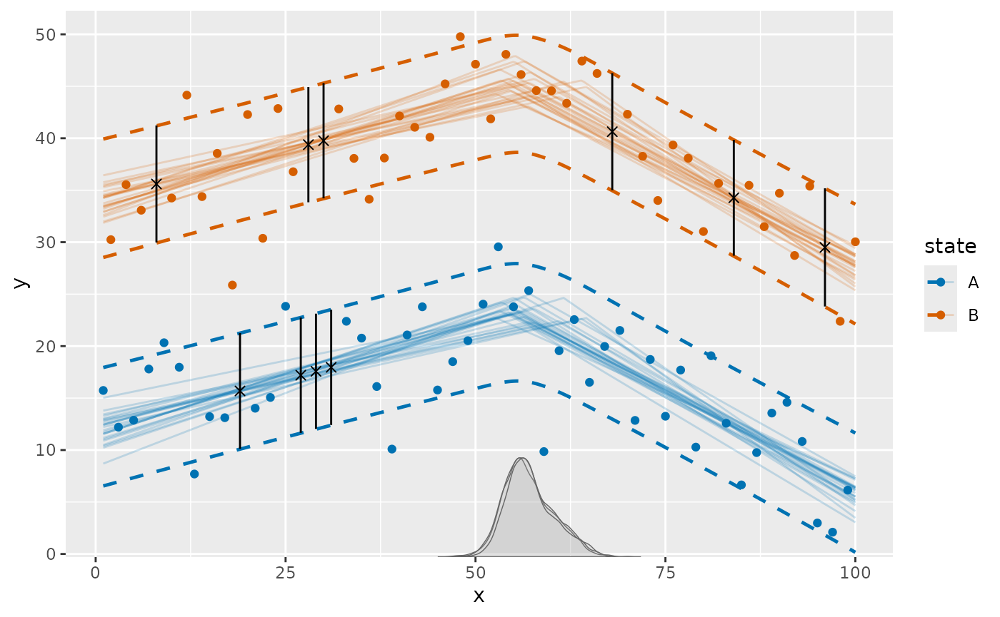

mcp allows missing values in the response. JAGS treats
the unknown responses as latent variables and samples them together with
the model parameters. mcp retains those posterior
imputation draws for later use. This article shows how to inspect
expected responses, posterior imputations, and their uncertainty.
An example with missing responses
The built-in example has a change in slope, a strong difference between two conditions, scattered missing responses, and a short run of missing responses. First, let’s fit the example and visualize it:
fit = mcp_example("missing")
The ordinary plot shows the observed responses and model estimates. Missing responses are omitted. See below how they can be visualized.
The underlying data contain some missing responses in
y:
## y x condition
## 1 NA 8 B
## 2 NA 19 A
## 3 NA 27 A
## 4 NA 28 B
## 5 NA 29 A
## 6 NA 30 B
## 7 NA 31 A
## 8 NA 68 B
## 9 NA 84 B
## 10 NA 96 BExpected responses and imputations
You can see the imputations fairly directly. predict()
describes plausible values of the missing response itself. These are the
latent response draws sampled jointly with the model parameters. The
imputation comes from trends in non-missing data and what they imply,
given the observed covariates (condition and
x), for the missing rows.
# Quantiles of posterior predictive for missing data: 10%, median, 90%
predict(fit, probs = c(0.1, 0.5, 0.9)) |>
filter(is.na(y))## y x condition predict sd Q10 Q50 Q90
## 1 NA 8 B 35.56012 4.428752 29.97012 35.58970 41.22393
## 2 NA 19 A 15.72108 4.293560 10.11604 15.67037 21.23415
## 3 NA 27 A 17.18509 4.292231 11.64240 17.18326 22.72653
## 4 NA 28 B 39.36003 4.364408 33.83071 39.37170 44.91014
## 5 NA 29 A 17.53601 4.340269 12.01996 17.56146 23.10363
## 6 NA 30 B 39.72210 4.371321 34.20804 39.74986 45.28754
## 7 NA 31 A 17.87290 4.311944 12.39594 17.93966 23.48235
## 8 NA 68 B 41.05731 4.436657 35.38428 41.01946 46.67103
## 9 NA 84 B 34.64024 4.400042 29.04458 34.61448 40.18853
## 10 NA 96 B 29.83363 4.466581 24.11651 29.80542 35.49975fitted() has the same syntax as predict()
but returns the posterior expected response. Its intervals are
narrower because they do not include response variation:
# Quantiles of posterior evaluated at missing data: 10%, median, 90%
fitted(fit, probs = c(0.1, 0.5, 0.9)) |>
filter(is.na(y))## y x condition fitted sd Q10 Q50 Q90
## 1 NA 8 B 35.59410 1.0808576 34.21259 35.58024 36.97628
## 2 NA 19 A 15.67323 0.8369118 14.60212 15.66705 16.74641
## 3 NA 27 A 17.18394 0.7645671 16.20420 17.19188 18.16005
## 4 NA 28 B 39.37086 0.7545884 38.40423 39.37503 40.32378
## 5 NA 29 A 17.56162 0.7634425 16.58176 17.56519 18.54122
## 6 NA 30 B 39.74854 0.7546261 38.78004 39.75454 40.70388
## 7 NA 31 A 17.93929 0.7694313 16.94644 17.94077 18.92591
## 8 NA 68 B 41.02455 1.1314420 39.67673 40.93275 42.53350
## 9 NA 84 B 34.61577 0.8885163 33.48295 34.61187 35.75197
## 10 NA 96 B 29.80698 1.2720626 28.17710 29.82286 31.41796Visualize imputations on the model plot
Imputations are not added to plot() automatically. Since
plot() returns a ggplot, it is easy to extend. Here an
× marks the posterior median and a vertical line shows the
central 80% imputation interval:
imputed = predict(fit, probs = c(0.1, 0.5, 0.9)) |>
filter(is.na(y))
# Start with mcp plot with prediction interval. Use all draws for less Monte Carlo error.
set.seed(42)
plot(fit, color_by = "condition", q_predict = c(0.1, 0.9), ndraws = Inf) +
# Add posterior predictive interval
geom_linerange(
data = imputed,
aes(x = x, ymin = Q10, ymax = Q90),
inherit.aes = FALSE,
color = "black"
) +
# Add "x" at posterior median
geom_point(
data = imputed,
aes(x = x, y = Q50),
inherit.aes = FALSE,
shape = 4, # an "x"
size = 2
)
This deliberately distinguishes imputed values from the solid
observed points. You can change the quantiles, marker, color, or add a
subset of the missing rows using ordinary dplyr and
ggplot2 code.
The plot above reduces each posterior predictive distribution to a
simple interval. Use summary = FALSE when you need the
individual draws instead. Here we plot the posterior predictive
distribution for each missing row:
imputed_draws = predict(fit, summary = FALSE) |>
filter(is.na(y))
ggplot(imputed_draws, aes(x = .prediction)) +
geom_density() +
facet_wrap(~x)
Making probabilistic statements about missing responses
Sometimes, the missing response is of direct interest. For example,
you may want to know the probability that a missing response is above a
threshold. You can use predict() with
summary = FALSE to get all posterior draws and then
calculate probabilities of various statements. For example:
imputed_draws |>
filter(data_row == 19) |>
summarise(
p_greater = mean(.prediction > 20),
p_lower = mean(.prediction < 10),
p_between = mean(.prediction > 10 & .prediction < 20)
)## # A tibble: 1 × 3
## p_greater p_lower p_between
## <dbl> <dbl> <dbl>
## 1 0.158 0.0888 0.753Other continuous predictors
Plotting differs from fitted() and
predict() in one respect: The smooth curves in
plot() are evaluated on data made by
interpolate_newdata(), which keeps additional continuous
predictors (i.e., predictors not assigned an aesthetic) at their
observed means by default, or at values supplied through the
at-argument. The plot caption reports these fixed
values.
The imputation markers above are different: predict(fit)
evaluates the original data, so every missing row uses its own predictor
values. If another continuous predictor is especially important, an
imputation may therefore lie away from a curve drawn at that predictor’s
mean. This is expected, just as an observed response with unusual
predictor values may lie away from that curve. Use
plot(fit, at = ...) or
interpolate_newdata(fit, at = ...) or make separate plots
when those differences deserve emphasis.
What else can be modeled?
Missing responses work with the usual mcp model
features. For example, you can:
- Include continuous and categorical predictors so imputations follow observed covariate information.
- Use group-level effects so sparsely observed groups borrow information from the population and their available observations.
-
Model changing residual standard
deviation with
sigma()so imputation uncertainty can vary over the predictor range. - Use binomial, Bernoulli, Poisson, or negative-binomial responses. Their imputations remain on the appropriate discrete response scale; binomial predictions can also be returned as rates.
The predictors required by the model must themselves be observed.
mcp currently imputes missing responses, not missing
predictor values, and it does not model the process that caused
responses to be missing. As with ordinary regression using incomplete
outcomes, interpretation relies on the missing responses being
reasonably explained by the observed predictors and model structure.
Model evaluation and time-series histories
Missing rows are not treated as observed contributions to
log_lik(), loo(), or waic(). For
ordinary non-AR/MA models, the remaining observed rows can still be used
for these calculations.
AR/MA models need extra care because a missing response can become
part of the history for later observations. mcp retains the
JAGS draws so fitted() and predict() can
reconstruct that history, but it does not currently integrate over
missing histories for pointwise likelihood calculations. Consequently,
log_lik(), loo(), and waic() are
unavailable when a missing response preceeds some observed data.
The time-series article discusses
this. Briefly, use posterior_predict() to generate fresh
replicated series from the posteriors (as all other mcp functions do),
which do not depend on the observed response history.
Original data versus new data
The retained JAGS draws belong to the missing rows in the original
fitted data. Calling predict(fit) uses them. For the
non-AR/MA example in this article, predictions for genuinely new data
are ordinary posterior predictions rather than imputations of the
original missing responses:
newdata = data.frame(
x = c(20, 80),
condition = factor(c("A", "B"), levels = levels(fit$data$condition))
)
predict(fit, newdata = newdata, probs = c(0.1, 0.5, 0.9))## x condition predict sd Q10 Q50 Q90
## 1 20 A 15.85747 4.405314 10.30823 15.85948 21.4193
## 2 80 B 36.20859 4.358880 30.65399 36.21750 41.7848